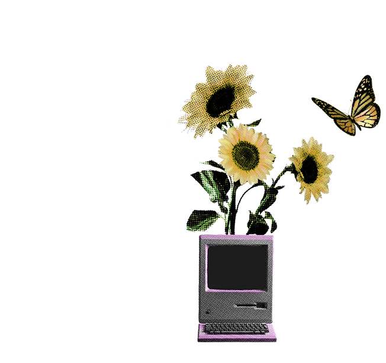

Backend Developer

About me
Soy Gianmarco Armijos Cossio, un estudiante de informática y entusiasta de la tecnología. Me enamoré de las computadoras cuando estaba en la escuela comenzando a explorar programas de diseño gráfico como CorelDraw e Illustrator. Después de dos años usando esos softwares de diseño, decidí obtener una nueva habilidad y seguir aprendiendo Photoshop. Un año más tarde comencé a aprender programas de edición de video y obtuve algunos proyectos de diseño independiente. Actualmente estoy trabajando en proyectos web independientes y entrenando en mis habilidades de Java Backend.